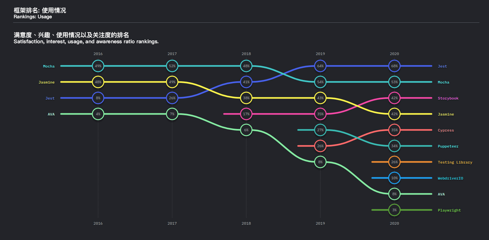
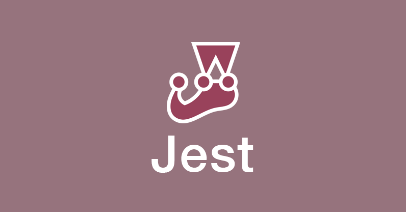
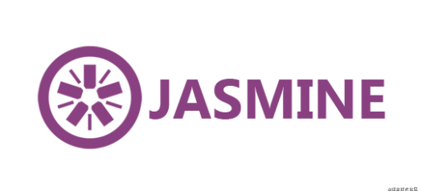
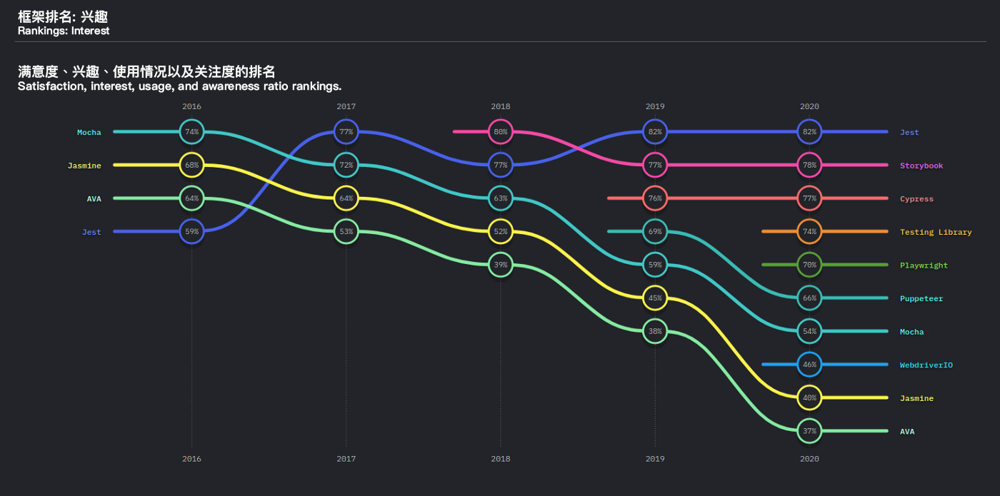
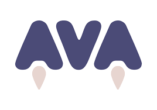
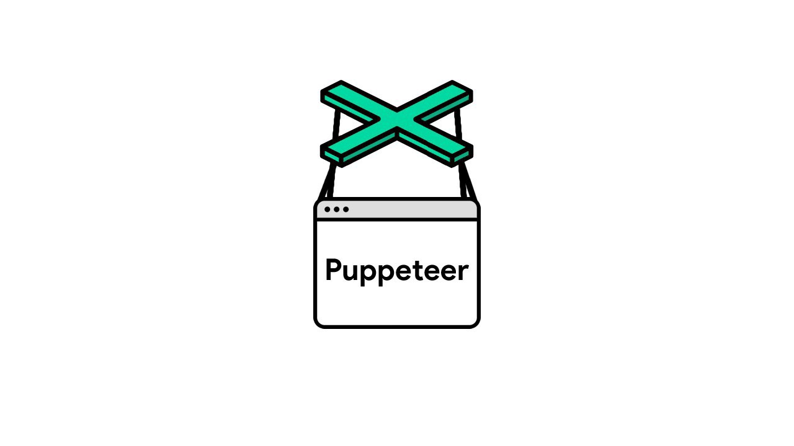

测试环节是软件工程中的重要组成部分。如果你不熟悉测试，那你可能会提出和别人一样的问题 —— 如果我的软件的所有功能都在正常运作，我为什么还要进行测试呢？
我们进行测试的目的是检查代码的功能是否正常，检查代码是否按预期工作。一般来说，我们并不会通过测试来查找代码中的 Bug。
而如果我们要针对 JavaScript 和 Node.js 应用程序进行测试，实际上有很多可用的框架供我们选择。
在本文中，我们将仔细研究当今可用的一些流行的测试框架。
Github Stars：38.3k

Jest 是一个易于操作的，delightful 的 JavaScript 测试框架。它的特性是是易于操作。我们可以在：Babel、TypeScript、Node、React、Angular、Vue 等项目中使用它！
Jest 是我最喜欢的框架之一，因为它快速、安全，易于使用而且它还为我们提供了大量文档。基于 2020 年 Javascript 状况调查，它是 JavaScript 开发人员中最常用的测试框架之一。而且调查显示，大多数开发人员都感兴趣于学习它。
GitHub Stars：20.2k
Mocha 是 Node.js 程序的 JavaScript 测试框架，支持浏览器、异步测试、测试覆盖率报告以及任何断言库的使用。
它简单、灵活、有趣，而且适用于 Node.js 和浏览器。2020 年 Javascript 状况调查 显示，它是仅次于 Jest 的 JavaScript 开发人员中第二常用的测试框架。
GitHub Stars：15k

Jasmine 是一个用于测试 JavaScript 代码的行为驱动开发框架。它不依赖于任何其他 JavaScript 框架。它不需要 DOM 节点，而且它的语法清晰明了，因此我们可以轻松使用它进行测试。
调查显示，虽然许多开发人员正在使用 Jasmine，但是他们对该框架的兴趣的趋势是下降的。

GitHub Stars：18.6k

AVA 是 Node.js 的测试框架。它拥有简洁的 API、详细的错误输出。它支持新的语言功能、支持测试文件隔离，能让我们更有信心进行开发。
GitHub Stars：68.2k

Puppeteer 是一个 Node.js 库，提供了高级的 API，通过 DevTools 协议 控制 Chrome 或 Chromium。Puppeteer 默认运行在 Headless Chrome 上，但我们也可以通过配置它，让它运行在完整的 Chrome 或 Chromium 上。
其他受欢迎的测试库还包括 Sinon.js、Chai、Cypress。我个人使用了 Sinon.js —— 它是支持行为监控、桩模块设置和测试数据模拟的 JavaScript 测试框架
不必要被这些测试框架所搞混，套进去。他们所做的，甚至最多能够做的，也只是提供一个更好的用于测试我们的代码的环境。调查也同时显示，Jest 已成为开发人员最爱的测试框架，而我也一直在使用 Jest 测试我的 Node 应用程序。
如果你是 Node.js 开发人员或 React 开发人员，我强烈推介你使用 Jest。
祝学习愉快！
如果发现译文存在错误或其他需要改进的地方，欢迎到 掘金翻译计划 对译文进行修改并 PR，也可获得相应奖励积分。文章开头的 本文永久链接 即为本文在 GitHub 上的 MarkDown 链接。
掘金翻译计划 是一个翻译优质互联网技术文章的社区，文章来源为 掘金 上的英文分享文章。内容覆盖 Android、iOS、前端、后端、区块链、产品、设计、人工智能等领域，想要查看更多优质译文请持续关注 掘金翻译计划、官方微博、知乎专栏。